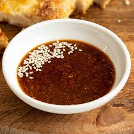

Tonkatsu Sauce

Description
Sauce that goes great with Chicken Katsu or coconut shrimp, or anything to dip in really.
Ingredients
- 1/2 cup ketchup
- 2 tablespoons soy sauce
- 1 tablespoon brown sugar
- 1 tablespoon mirin (Japanese sweet wine)
- 1 1/2 teaspoons Worcestershire sauce
- 1 teaspoon grated fresh ginger
- 1 clove minced garlic
Steps
- Stir together ketchup, soy sauce, brown sugar, mirin, Worcestershire sauce, ginger, and garlic in a bowl.
- Let flavors blend for at least 30 minutes before serving.